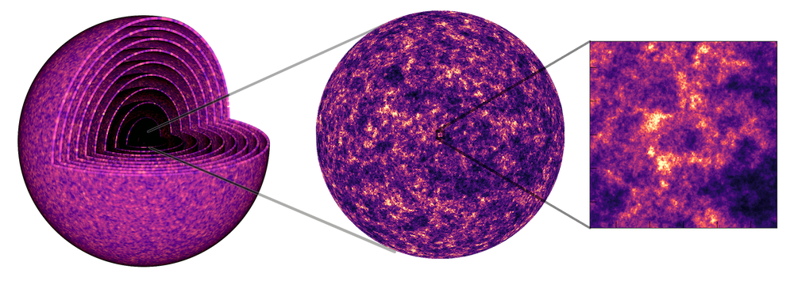

The Python Array API Standard
STEP-UP RSLondon Conference 2026
Patrick Roddy
2026-06-29
The Target Audience
- Most Python users.
- In particular, maintainers of:
- Array “providing” libraries (e.g. NumPy).
- Array “consuming” libraries (e.g. this work).
- Downstream libraries that work with arrays.
- Anyone with an interest in benchmarking.
- Cosmologists, maybe…
GLASS: Generator for Large Scale Structure
Overview
GLASS is a code used in cosmology to generate simulations of the full observable universe. In its current form, the primary user base of the code are collaborations for large galaxy surveys, which are a cornerstone of modern cosmology.

The Team


Me (Co-Investigator + Technical Staff)
- Co-Investigators: Alessio Spurio Mancini, Arthur Loureiro, Benjamin Joachimi, Jason McEwen, Niall Jeffrey.
- Research Administration: Rebecca Martin.
The Aim
- Transform GLASS into a GPU-enabled code.
- Improve the performance of simulations with GPU acceleration.
- Implement and adapt parallel processing elements that utilise GPU capabilities.
- Optimise GLASS for modern GPU architectures.
- Enable differentiable simulations using JAX (in part or in full).
- Embed GLASS within N-body simulations running on GPU infrastructure for post-processing.
Python Array API Standard
The Array Ecosystem

Simple Example
Alternatively the helper function array_api_compat.array_namespace(x) can be used to compute the xp.
Migration Guide
np.transpose(x, axes)→xp.permute_dims(x, axes)np.concatenate(...)→xp.concat(...)np.absolute(x)→xp.abs(x)np.bool_→xp.boolnp.array(x)→xp.asarray(x)x.astype(dtype)→xp.astype(x, dtype)np.trace(x)→xp.linalg.trace(x)- …
Array API Libraries
- array-api: outlines the standard.
- array-api-compat: compatibility layer and helper functions.
- array-api-extra: extra array functions.
- array-api-strict: strict implementation useful for testing array consuming libraries.
- array-api-tests: testing suite for array providing libraries.
- array-api-typing: future static typing support.
Our Experience
Wrapping Functions Outside the Specification
import numpy as np
from glass._types import AnyArray
def gradient(f: AnyArray) -> AnyArray:
"""Return the gradient of an N-dimensional array."""
xp = f.__array_namespace__()
if xp.__name__ in {"numpy", "jax.numpy"}:
return xp.gradient(f)
# If any other backend use default
f_np = np.asarray(f, copy=True)
result_np = np.gradient(f_np)
return xp.asarray(result_np, copy=True)Handling the immutability of JAX
import array_api_extra as xpx
def yield_array_api_compatible_implementation(x):
xp = x.__array_namespace__()
n = 10
y = xp.zeros((n, *x.shape))
for i in range(n):
for j, x_j in enumerate(x):
y = xpx.at(y)[i,...].set(x_j * (i + j + 1))
# to avoid mutating in subsequent iterations
yield xp.asarray(y, copy=True)Benchmarking with pytest-benchmark
import array_api_extra as xpx
import glass
def test_radialwindow(benchmark, xp) -> None:
"""check zeff is computed when not provided"""
arr_length = 100_000
expected_zeff = xp.asarray(66_666.0)
wa = xp.arange(arr_length)
za = xp.arange(arr_length)
w = benchmark(glass.RadialWindow, za, wa)
xpx.testing.assert_close(w.zeff, expected_zeff)------------------------------------------ benchmark: 18 tests -------------------------------------------
Name (time in us) Mean StdDev Rounds
----------------------------------------------------------------------------------------------------------
test_broadcast_leading_axes[numpy] (0001_5daafb9) 14.3906 (32.86) 0.8640 (91.93) 7884
test_broadcast_leading_axes[numpy] (NOW) 14.0193 (32.02) 0.3437 (36.56) 8038
test_cumulative_trapezoid_1d[numpy] (0001_5daafb9) 74.8633 (170.97) 1.2138 (129.15) 8075
test_cumulative_trapezoid_1d[numpy] (NOW) 75.4069 (172.21) 1.4036 (149.35) 8263
test_cumulative_trapezoid_2d[numpy] (0001_5daafb9) 73.7475 (168.42) 1.4709 (156.50) 7343
test_cumulative_trapezoid_2d[numpy] (NOW) 73.8911 (168.75) 1.4670 (156.09) 7867
test_galaxy_shear[numpy-False] (0001_5daafb9) 2,756.7223 (>1000.0) 30.8210 (>1000.0) 1744
test_galaxy_shear[numpy-False] (NOW) 2,724.6682 (>1000.0) 30.0616 (>1000.0) 1756
test_galaxy_shear[numpy-True] (0001_5daafb9) 3,458.8037 (>1000.0) 46.0236 (>1000.0) 1229
test_galaxy_shear[numpy-True] (NOW) 3,378.0130 (>1000.0) 208.7110 (>1000.0) 1226
test_getcl_lmax_0[numpy] (0001_5daafb9) 0.4582 (1.05) 0.0094 (1.0) 8066
test_getcl_lmax_0[numpy] (NOW) 0.4379 (1.0) 0.0098 (1.04) 8223
test_getcl_lmax_larger_than_cls[numpy] (0001_5daafb9) 11.7196 (26.76) 0.3221 (34.27) 8172
test_getcl_lmax_larger_than_cls[numpy] (NOW) 11.7613 (26.86) 0.4315 (45.91) 8230
test_multalm[numpy] (0001_5daafb9) 122.6629 (280.14) 2.1285 (226.47) 8124
test_multalm[numpy] (NOW) 122.7557 (280.35) 2.2902 (243.68) 8087
test_radialwindow[numpy] (0001_5daafb9) 455.4797 (>1000.0) 9.0447 (962.36) 7364
test_radialwindow[numpy] (NOW) 453.7619 (>1000.0) 10.7064 (>1000.0) 6981
----------------------------------------------------------------------------------------------------------Other
No support for random number generation data-apis/array-api#874.
Typing is currently performed using unions of array typing awaiting data-apis/array-api-typing.
Can contribute more functions to data-apis/array-api-extra.
Conclusions
- The Python Array API allows library maintainers to support multiple array backends.
- Recommended to consult the standard and use
xp/.__array_namespace__()for new code. - The framework is still new so only a few libraries have full support:
NumPy,JAX,CuPy. - Not all aspects of array backends are supported, e.g. random number generation, typing, …
- The standard comes with several packages to aid support:
array-api-compat,array-api-extra,array-api-strict,array-api-tests,array-api-typing.

The Python Array API Standard